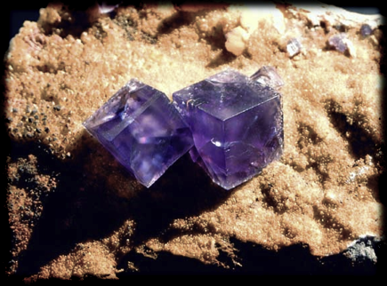

האטומים במבנים גבישיים יוצרים תצורות מרחביות בעלות סדר מופתי. מבנים אלה קשורים בקשר הדוק לכללים המתמטיים של פוליטופים ממלאי-חלל ושל סידור כדורים (ספרות).
בחלון שמימין תוכלו לצפות במספר תצורות טיפוסיות מעין אלה. בלחיצה על הקובייה או על התמניון, ניתן לראות כיצד מבנים אלה נכנסים לתוך מבנה הסימטריה של גבישים משוכללים.
|  |
גביש פלוּאוֹריט יוצר מבנים סדורים מאד דמויי-קובייה.